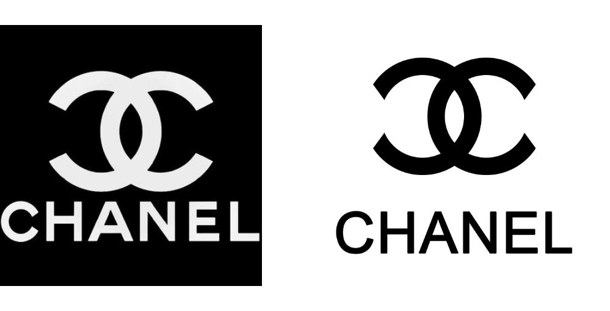

이름 / 로고
Name / Logo
Name
26살의 가브리엘 보뇌르 "코코" 샤넬(Gabrielle Bonheur "Coco" Chanel)이 자신의 첫 가게를 파리에 연 것은 1909년이다.
이후 그녀는 순조롭게 패션 디자이너로서 성공의 길을 걸으며, 1921년에 샤넬 향수로 세계 패션계의 역사적인 사업을 시작한다.
샤넬은 여성복에서 혁신을 이룬 것처럼 향수 이름을 짓는 데에서도 기존의 방식을 따르지 않았다.
그녀는 단지 개발된 순서에 따라 번호만으로 향수 이름을 붙였다.
당시 대부분의 향수 이름은 ‘봄의 욕망’, ‘저녁의 도취’와 같은 시적인 이름이 붙었다.
여기에 이미 파리에서 자신의 의상실이 유명하다는 사실에 자신감을 얻고 ‘샤넬’을 덧붙여 향수 이름을 짓게 된다
Logo
로고도 직접 디자인하는데, 하나는 자신의 이름인 영문 CHANEL을 단순한 산세리프체로 디자인한 워드마크,
또 하나는 두 개의 C자가 서로 대칭적으로 놓인 로고다. (가브리엘 샤넬은 어려서부터 ‘Coco’라는 별명을 가지고 있었다.)
이 두 개의 로고는 샤넬이 세계 패션계에 던진 화두와 이념을 잘 드러내 보인다.
먼저, 검은색과 흰색이라는 세상에서 가장 단순하고 순수한 색의 대비로 이루어졌다는 점과 두 개의 C자가 이루고 있는
완벽한 대칭성에 여성을 거추장스럽고 불편한 옷으로부터 해방시키려고 했던 샤넬의 정신이 그대로 드러나 있다.
샤넬의 로고는 향수와 화장품, 욕실용품에만 사용되었고 상표들은 1925년에 정식 등록되었다.
